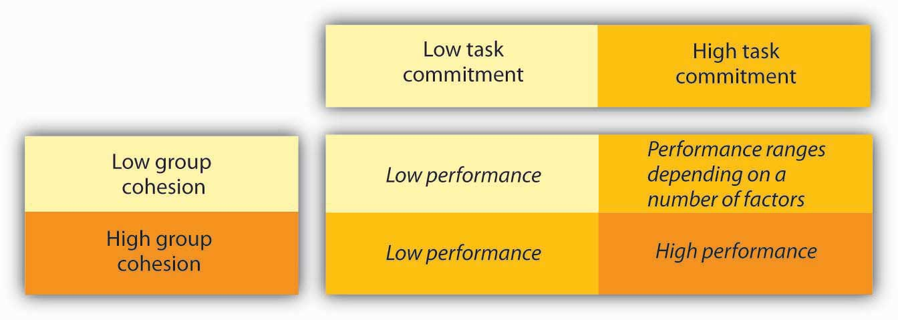

Because many tasks in today’s world have become so complex, groups and teams have become an essential component of an organization’s success. The success of the group depends on the successful management of its members and making sure all aspects of work are fair for each member. Being able to work in a group is a key skill for managers and employees alike.
What is a groupA collection of individuals who interact with each other such that one person’s actions have an impact on the others.? A group is a collection of individuals who interact with each other such that one person’s actions have an impact on the others. In organizations, most work is done within groups, and managing groups is key to each of the P-O-L-C functions. How groups function has important implications for organizational productivity. Groups where people get along, feel the desire to contribute, and are capable of coordinating their efforts may have high performance levels, whereas those characterized by extreme levels of conflict or hostility may demoralize members of the workforce.
In organizations, groups can be classified into two basic types: informal and formal. Informal work groupsGroups made up of two or more individuals who are associated with one another in ways not prescribed by the formal organization. are made up of two or more individuals who are associated with one another in ways not prescribed by the formal organization. For example, a few people in the company who get together to play tennis on the weekend would be considered an informal group. A formal work groupA group made up of managers, subordinates, or both with close associations among group members that influence the behavior of individuals in the group. is made up of managers, subordinates, or both with close associations among group members that influence the behavior of individuals in the group. We will discuss many different types of formal work groups later on in this chapter.
American organizational psychologist Bruce Tuckman presented a robust model in 1965 that is still widely used today. On the basis of his observations of group behavior in a variety of settings, he proposed a four-stage map of group evolution, known as the Forming-Storming-Norming-Performing ModelA model proposed by Bruce Tuckman in 1965 involving a four-stage map of group evolution..Tuckman, B. (1965). Developmental sequence in small groups. Psychological Bulletin, 63, 384–399. Later he enhanced the model by adding a fifth and final stage, adjourningThe fifth and final stage of the Tuckman model.. The phases are illustrated in the Stages of the Group Development Model. Interestingly enough, just as an individual moves through developmental stages such as childhood, adolescence, and adulthood, so does a group, although in a much shorter period of time.
According to this theory, to facilitate a group successfully, the leader needs to move through various leadership styles over time. Generally, this is accomplished by first being more direct, eventually serving as a coach, and later, once the group is able to assume more power and responsibility for itself, shifting to delegator.
While research has not confirmed that this is descriptive of how groups progress, knowing and following these steps can help groups be more effective. For example, groups that do not go through the storming phase early on will often return to this stage toward the end of the group process to address unresolved issues. Another example of the validity of the group development model involves groups that take the time to get to know each other socially in the forming stage. When this socialization occurs, groups tend to handle future challenges better because the individuals have an understanding of each other’s needs.
Figure 13.4 Stages of the Group Development Model
In the FormingThe stage in which the group comes together for the first time. stage, the group comes together for the first time. The members may already know each other or they may be total strangers. In either case, there is a level of formality, some anxiety, and a degree of guardedness as group members are not sure what is going to happen next. “Will I be accepted? What will my role be? Who has the power here?” These are some of the questions participants think about during this stage of group formation. Because of the large amount of uncertainty, members tend to be polite, conflict avoidant, and observant. They are trying to figure out the “rules of the game” without being too vulnerable. At this point, they may also be quite excited and optimistic about the task, perhaps experiencing a level of pride at being chosen to join a particular group.
Group members are trying to achieve several goals at this stage, although this may not necessarily be done consciously. First, they are trying to get to know one another. Often this can be accomplished by finding some common ground. Members also begin to explore group boundaries to determine what will be considered acceptable behavior. “Can I interrupt? Can I leave when I feel like it?” This trial phase may also involve testing the appointed leader or seeing whether a leader emerges from the group. At this point, group members are also discovering how the group will work in terms of what needs to be done and who will be responsible for each task. This stage is often characterized by abstract discussions about issues to be addressed by the group; those who like to get moving can become impatient with this part of the process. This phase is usually short in duration, perhaps a meeting or two.
Once group members feel sufficiently safe and included, they tend to enter the StormingGroup members begin to explore their power and influence and they often stake out their territory by differentiating themselves from the other group members rather than seeking common ground. phase. Participants focus less on keeping their guard up as they shed social facades, becoming more authentic and more argumentative. Group members begin to explore their power and influence, and they often stake out their territory by differentiating themselves from the other group members rather than seeking common ground. Discussions can become heated as participants raise conflicting points of view and values, or disagree over how tasks should be done and who is assigned to them. It is not unusual for group members to become defensive, competitive, or jealous. They may take sides or begin to form cliques within the group. Questioning and resisting direction from the leader is also quite common. “Why should I have to do this? Who designed this project in the first place? What gives you the authority to tell me what to do?”
Although little seems to get accomplished at this stage, it actually serves an important purpose: group members are becoming more authentic as they express their deeper thoughts and feelings. What they are really exploring is “Can I truly be me, have power, and be accepted?” During this chaotic stage, a great deal of creative energy that was previously buried is released and available for use, but it takes skill to move the group from Storming to Norming. In many cases, the group gets stuck in the Storming phase.
Once group members discover that they can be authentic and that the group is capable of handling differences without dissolving, they are ready to enter the next stage, NormingThe stage in which participants find it easy to establish their own ground rules (or norms) and define their operating procedures and goals..
“We survived!” is the common sentiment as this stage. Group members often feel elated at this point, and they are much more committed to each other and the group’s goal. Feeling energized by knowing they can handle the “tough stuff,” group members are now ready to get to work. Finding themselves more cohesive and cooperative, participants find it easy to establish their own ground rules (or norms) and define their operating procedures and goals. The group tends to make big decisions, while subgroups or individuals handle the smaller decisions. It is hoped at this point the group members are more open and respectful toward each other and willing to ask one another for both help and feedback. They may even begin to form friendships and share more personal information.
At this point, the leader should become more of a facilitator by stepping back and letting the group assume more responsibility for its goal. Since the group’s energy is running high, this is an ideal time to host a social or team-building event.
Galvanized by a sense of shared vision and a feeling of unity, the group is ready to go into high gear. Members are more interdependent, individuality and differences are respected, and group members feel themselves to be part of a greater entity. At the PerformingThe stage in which participants are not only getting the work done, but they also pay greater attention to how they are doing it. stage, participants are not only getting the work done, but they also pay greater attention to how they are doing it. They ask such questions as, “Do our operating procedures best support productivity and quality assurance? Do we have suitable means for addressing differences that arise so we can preempt destructive conflicts? Are we relating to and communicating with each other in ways that enhance group dynamics and help us achieve our goals? How can I further develop as a person to become more effective?” By now, the group has matured, becoming more competent, autonomous, and insightful.
Group leaders can finally move into coaching roles and help members grow in skill and leadership. These leadership shifts are essential for managers enacting the Leadership function to keep in mind. In fact, a manager who leads multiple teams may find it necessary to shift leadership styles not only over time but between teams at different stages.
Just as groups form, so do they end. For example, many groups or teams formed in a business context are project-oriented and therefore are temporary. Alternatively, a working group may dissolve because of an organizational restructuring. As with graduating from school or leaving home for the first time, these endings can be bittersweet, with group members feeling a combination of victory, grief, and insecurity about what is coming next. For those who like routine and bond closely with fellow group members, this transition can be particularly challenging. Group leaders and members alike should be sensitive to handling these endings respectfully and compassionately. An ideal way to close a group is to set aside time to debrief (“How did it all go? What did we learn?”), acknowledge one another, and celebrate a job well done.
As you may have noted, the five-stage model we have just reviewed is a linear process. According to the model, a group progresses to the Performing stage, at which point it finds itself in an ongoing, smooth-sailing situation until the group dissolves. In reality, subsequent researchers, most notably Joy H. Karriker, have found that the life of a group is much more dynamic and cyclical in nature.Karriker, J. H. (2005). Cyclical group development and interaction-based leadership emergence in autonomous teams: an integrated model. Journal of Leadership & Organizational Studies, 11(4), 54–64. For example, a group may operate in the Performing stage for several months. Then, because of a disruption, such as a competing emerging technology that changes the rules of the game or the introduction of a new CEO, the group may move back into the Storming phase before returning to Performing. Ideally, any regression in the linear group progression will ultimately result in a higher level of functioning. Proponents of this cyclical model draw from behavioral scientist Connie Gersick’s study of punctuated equilibriumThe theory that change within groups occurs in rapid, radical spurts rather than gradually over time..Gersick, C. J. G. (1991). Revolutionary change theories: A multilevel exploration of the punctuated equilibrium paradigm. Academy of Management Review, 16(1), 10–36.
The concept of punctuated equilibrium was first proposed in 1972 by paleontologists Niles Eldredge and Stephen Jay Gould, who both believed that evolution occurred in rapid, radical spurts rather than gradually over time. Identifying numerous examples of this pattern in social behavior, Gersick found that the concept applied to organizational change. She proposed that groups remain fairly static, maintaining a certain equilibrium for long periods. Change during these periods is incremental, largely due to the resistance to change that arises when systems take root and processes become institutionalized. In this model, revolutionary change occurs in brief, punctuated bursts, generally catalyzed by a crisis or a problem that breaks through the systemic inertia and shakes up the deep organizational structures in place. At this point, the organization or group has the opportunity to learn and create new structures that are better aligned with current realities. Whether the group does this is not guaranteed. In sum, in Gersick’s model, groups can repeatedly cycle through the Storming and Performing stages, with revolutionary change taking place during short transitional windows. For organizations and groups who understand that disruption, conflict, and chaos are inevitable in the life of a social system, these disruptions represent opportunities for innovation and creativity.
Figure 13.5 The Punctuated Equilibrium Model

CohesionThe degree of camaraderie within the group. can be thought of as a kind of social glue. It refers to the degree of camaraderie within the group. Cohesive groups are those in which members are attached to each other and act as one unit. The more cohesive a group, the more productive it will be and the more rewarding the experience will be for the group’s members.Beal, D. J., Cohen, R. R., Burke, M. J., & McLendon, C. L. (2003). Cohesion and performance in groups: A meta-analytic clarification of construct relations. Journal of Applied Psychology, 88, 989–1004; Evans, C. R., & Dion, K. L. (1991). Group cohesion and performance: A meta-analysis. Small Group Research, 22, 175–186. Cohesive groups tend to have the following characteristics: they have a collective identity; they experience a moral bond and a desire to remain part of the group; they share a sense of purpose, working together on a meaningful task or cause; and they establish a structured pattern of communication.
The fundamental factors affecting group cohesion include the following:
As you might imagine, there are many benefits in creating a cohesive group. Members are generally more personally satisfied and feel greater self-confidence and self-esteem in a group where they feel they belong. For many, membership in such a group can be a buffer against stress, which can improve mental and physical well-being. Because members are invested in the group and its work, they are more likely to regularly attend and actively participate in the group, taking more responsibility for the group’s functioning. In addition, members can draw on the strength of the group to persevere through challenging situations that might otherwise be too hard to tackle alone.
Despite the advantages of cohesion, too much cohesion can be detrimental to a group. Because members can come to value belonging over all else, an internal pressure to conform may arise where some members modify their behavior to adhere to group norms. Members may become conflict avoidant, focusing on trying to please one another so as not to be ostracized. In some cases, members might censor themselves to maintain the party line. As such, the group is dominated by a superficial sense of harmony and discourages diversity of thought. Having less tolerance for deviants, who threaten the group’s static identity, cohesive groups will often disapprove of members who dare to disagree. Members attempting to make a change may be criticized, undermined, or even ostracized by other members, who perceive their attempts as a threat to the status quo. The painful possibility of being marginalized can keep many members in line with the majority.
The more strongly members identify with the group, the easier it is to see outsiders as inferior or, in extreme cases, as enemies. It is easy to see how this can lead to increased insularity. This form of prejudice can have a downward spiral effect. The group is not getting corrective feedback from within its own confines, and it is closing itself off from input and a cross-fertilization of ideas from the outside. In such an environment, groups can easily adopt extreme ideas that will not be challenged. Denial increases as problems are ignored and failures are blamed on external factors. With limited, often biased, information and no internal or external opposition, groups like these can make disastrous decisions.
GroupthinkA group pressure phenomenon that increases the risk of the group making flawed decisions by allowing reductions in mental efficiency, reality testing, and moral judgment. is a group pressure phenomenon that increases the risk of the group making flawed decisions by allowing reductions in mental efficiency, reality testing, and moral judgment. A famous example of groupthink is the decision to invade Cuba made by President John F. Kennedy and his cabinet in 1961. In a matter of days, Cuban forces repelled the invaders, whose objective was to overthrow the entire Cuban government, resulting in many casualties and captured troops. In retrospect, there were many reasons why the Bay of Pigs invasion was doomed from the start, but the planning and approval were characterized by a belief that the insiders knew best and did not need to consider “devil’s advocate” points of view. As this example illustrates, groupthink is a serious risk in highly cohesive groups.Janis, I. L. (1972). Victims of groupthink. New York: Houghton Mifflin.
Cohesive groups can go awry in much milder ways. For example, group members can value their social interactions so much that they have fun together but spend little time on accomplishing their assigned task. Or a group’s goal may begin to diverge from the larger organization’s goal and those trying to uphold the organization’s goal may be criticized (for example, students may tease the class “brain” for doing well in school).
In addition, research shows that cohesion leads to acceptance of group norms.Goodman, P. S., Ravlin, E., & Schminke, M. (1987). Understanding groups in organizations. Research in Organizational Behavior, 9, 121–173. Groups with high task commitment tend to do well, but suppose you belong to a group in which the norms are to work as little as possible! As you might imagine, these groups accomplish little and can actually work together against the organization’s goals.
Figure 13.6
Groups with high cohesion and high task commitment tend to be the most effective.
Social loafingThe tendency of individuals to put in less effort when working in a group context. refers to the tendency of individuals to put in less effort when working in a group context. This phenomenon, also known as the Ringelmann effect, was first noted by French agricultural engineer Max Ringelmann in 1913. In one study, he had people pull on a rope individually and in groups. He found that as the number of people pulling increased, the group’s total pulling force was less than the sum of individual efforts had been when measured alone.Karau, S. J., & Williams, K. D. (1993). Social loafing: A meta-analytic review and theoretical integration. Journal of Personality and Social Psychology, 65, 681–706.
Why do people work less hard when they are working with other people? Observations show that as the size of the group grows, this effect becomes larger as well.Karau, S. J., & Williams, K. D. (1993). Social loafing: A meta-analytic review and theoretical integration. Journal of Personality and Social Psychology, 65, 681–706. The social loafing tendency is not so much a matter of laziness as a matter of perceiving that one will receive neither one’s fair share of rewards if the group is successful nor blame if the group fails. Rationales for this behavior include, “My own effort will have little effect on the outcome.” “Others aren’t pulling their weight, so why should I?” Or “I don’t have much to contribute, and no one will notice anyway.” This is a consistent effect across a great number of group tasks and countries.Gabrenya, W. L., Latane, B., & Wang, Y. (1983). Social loafing in cross-cultural perspective. Journal of Cross-Cultural Perspective, 14, 368–384; Harkins, S., & Petty, R. E. (1982). Effects of task difficulty and task uniqueness on social loafing. Journal of Personality and Social Psychology, 43, 1214–1229; Taylor, D. W., & Faust, W. L. (1952). Twenty questions: Efficiency of problem-solving as a function of the size of the group. Journal of Experimental Psychology, 44, 360–363; Ziller, R. C. (1957). Four techniques of group decision-making under uncertainty. Journal of Applied Psychology, 41, 384–388. Research also shows that perceptions of fairness are related to less social loafing.Price, K. H., Harrison, D. A., & Gavin, J. H. (2006). Withholding inputs in team contexts: Member composition, interaction processes, evaluation structure, and social loafing. Journal of Applied Psychology, 91, 1375–1384. Therefore, teams that are deemed as more fair should also see less social loafing.
Collective efficacyA group’s perception of its ability to successfully perform well. refers to a group’s perception of its ability to successfully perform well.Bandura, A. (1997). Self-efficacy: The exercise of control. San Francisco: Jossey-Bass. A group with high collective efficacy is one whose members share a belief in the group’s capability to pursue its agreed-upon course of action and attain its goals. Collective efficacy is influenced by a number of factors, including watching others (“that group did it and we’re better than them”), verbal persuasion (“we can do this”), and how a person feels (“this is a good group”). Research shows that a group’s collective efficacy is positively related to its performance.Gully, S. M., Incalcaterra, K. A., Joshi, A., & Beaubien, J. M. (2002). A meta-analysis of team-efficacy, potency, and performance: Interdependence and level of analysis as moderators of observed relationships. Journal of Applied Psychology, 87, 819–832; Porter, C. O. L. H (2005). Goal orientation: Effects on backing up behavior, performance, efficacy, and commitment in teams. Journal of Applied Psychology, 90, 811–818; Tasa, K., Taggar, S., & Seijts, G. H. (2007). The development of collective efficacy in teams: A multilevel and longitudinal perspective. Journal of Applied Psychology, 92, 17–27. In addition, this relationship is stronger when task interdependence (the degree an individual’s task is linked to someone else’s work) is high rather than low.
Groups may be either formal or informal. Groups go through developmental stages much like individuals do. The Forming-Storming-Norming-Performing-Adjourning Model is useful in prescribing stages that groups should pay attention to as they develop. The punctuated-equilibrium model of group development argues that groups often move forward during bursts of change after long periods without change. Groups that are similar, stable, small, supportive, and satisfied tend to be more cohesive than groups that are not. Cohesion can help support group performance if the group values task completion, but too much cohesion can also be a concern for groups. Social loafing increases as groups become larger. When collective efficacy is high, groups tend to perform better.